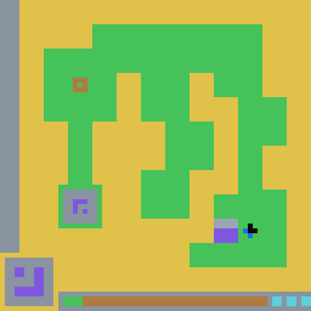
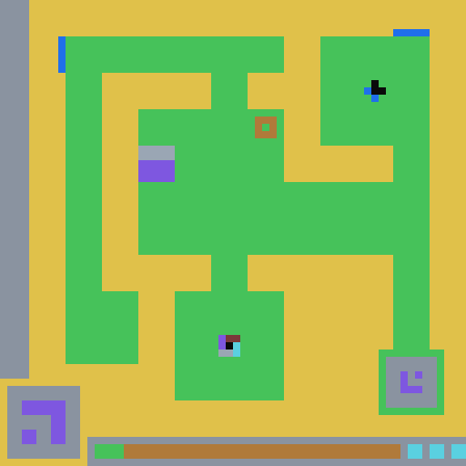
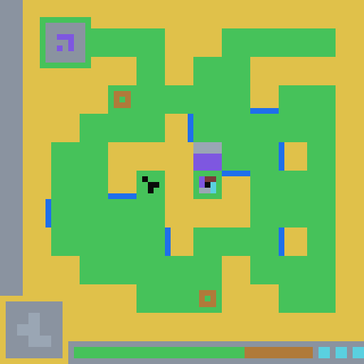
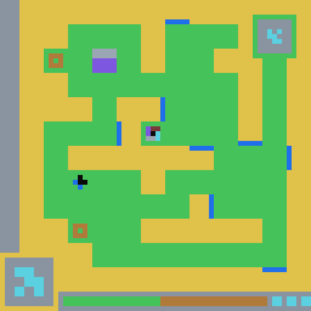
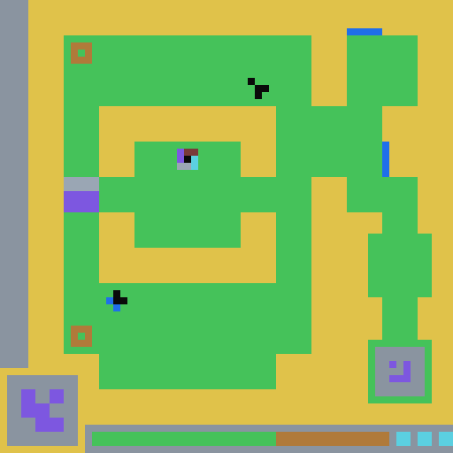
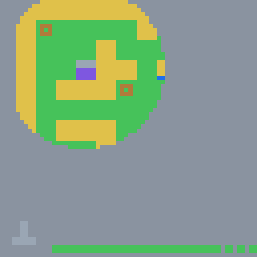

L1
A companion to “The Second Half of AI for Science”《AI for Science 的下半场》姊妹篇
An AI agent was dropped into a game with no instructions. It didn’t just win — it wrote down what it learned, in a notation meant for itself, and that writing is what beat the level brute force couldn’t.一个 AI agent 被扔进一个没有任何说明的游戏。它不只是通关了——它把学到的东西写了下来,用一种为自己而设的记号;而正是那份"写下来的东西",攻破了纯试错攻不下的那一关。
ls20 (“Locksmith”) — the agent aligning a hidden lock and delivering the block into the key-box, ending on the win. 7 / 7 cleared, no tutorial ever given. (Real recording frames, looping.)通关过程,逐帧回放。 ARC-AGI-3 的 ls20(“Locksmith” 锁匠)第 7 关——agent 对齐一把隐藏的锁,把方块送进 key-box,收在通关那一刻。7/7 全通,全程无教程。(真实录像帧,循环播放。)The manifesto argued that the bottleneck in AI-for-science isn’t how smart one agent is — it’s the ecosystem it works in, and the missing piece is a research artifact written for agents, not papers written for humans. This is the smallest honest test of that bet I could build: one game, played end to end, where you can watch an AI do science — infer a world’s rules from nothing — and then measure whether the artifact it wrote made it a better scientist.那篇宣言提出:AI for science 的瓶颈不在于单个 agent 有多聪明,而在于它所处的生态;缺失的那一块,是一种为 agent 而写、而非为人而写的研究产物(research artifact)。这篇是我能搭出的、对这个赌注最小的诚实检验:一个游戏,端到端玩完,你可以亲眼看一个 AI 做科学——从零推断一个世界的规则——然后量一量:它写下的那份产物,有没有让它成为更好的科学家。
ls20 with no tutorial and cleared all 7 levels — writing a world-model artifact (an ARA) as it played.Claude(Opus)通过一个轻量中继玩 ARC-AGI-3 的 ls20,没有教程,通关全部 7 关——并边玩边写出一份世界模型 artifact(ARA)。01 · The comparison that matters01 · 最关键的那个对比
A demo where an agent wins is easy to fake and hard to trust. So the load-bearing part of this whole post is a control. Two copies of the same model reach Level 7 identically — both replay the winning routes for Levels 1–6. The only difference is what they carry into the final level: one has the full artifact it wrote (claims, heuristics, and the ability to query them); the other has only recipes.md, a list of the correct moves. Same budget, same model, same starting point."agent 通关了"这种 demo 好造、也难取信。所以这整篇的承重部分是一个对照。同一个模型的两份拷贝以完全相同的方式抵达第 7 关——都重放第 1–6 关的通关路线。唯一的区别是它们带进最后一关的东西:一个带着它写的完整 artifact(claims、heuristics,以及查询它们的能力);另一个只有 recipes.md,一串正确动作的清单。同样的预算、同样的模型、同样的起点。
The recipes-only agent narrates its own ceiling, and it’s worth hearing verbatim:只有 recipes 的那个 agent 亲口说出了自己的天花板,值得逐字一听:
“This is the ablation gap: I have the Locksmith family and the L1–L6 routes, but not the distilled L7 mechanics.”— the recipes-only agent, from its own step log“这就是消融差距(ablation gap):我有 Locksmith 这一套和 L1–L6 的路线,但没有蒸馏出来的 L7 机制。”——只有 recipes 的 agent,出自它自己的 step 日志
Here is the sharp version of the gap. Level 7 has a lock — a 3×3 pattern plus a colour, driven by controls scattered across a fog-covered maze. Both agents know the shape of a Locksmith level: read the target, align the lock, deliver. But where L7’s controls are, what its target is, and which sequence opens it all live in the world model — none of it is in a list of correct moves. So the world-model agent found the lock and opened it. The recipes-only agent never found it at all. It even logged “control operated” at one point — but that was a false alarm, a fog-of-war viewport shifting as the block moved (286 cells changing, not the handful a real toggle moves). It mistook the fog for progress. It didn’t run out of budget; it ran out of any idea where the lock was.把这个差距说透。第 7 关是有一把锁的——一个 3×3 图案加一个颜色,由散布在迷雾迷宫里的若干控制驱动。两个 agent 都知道 Locksmith 关卡的套路:读目标、对齐锁、交付。但L7 的控制在哪、目标是什么、哪个序列能打开——这些全在世界模型里,正确动作清单里一点都没有。于是带世界模型的 agent 找到了锁并打开了它;只有 recipes 的 agent 压根没找到。它甚至一度在日志里记下"操作了控制"——但那是误报:方块移动引起的战争迷雾视口变化(286 个 cell 在变,而不是真正翻转所改变的那几个)。它把迷雾错当成了进展。它不是预算用完了,而是压根不知道锁在哪。
02 · A test of doing science02 · 一场"做科学"的考试
“No tutorial” isn’t a gimmick — it’s the condition of real science. Nature ships no rulebook and no overview. To clear ls20 the agent has to do, in miniature, what a scientist does: run experiments by pressing actions and diffing frames, form hypotheses, get refuted, build a theory, and carry it to the next phenomenon. The capabilities the game exercises — system identification, refusing to over-generalize from too few samples, building compositional theories, searching a solution space, transferring across problems — are a scientist’s toolkit. ls20 is a model organism for “can an AI do science,” small enough to watch end to end."没有教程"不是噱头——它就是真实科学的处境。大自然不发规则书,也不给全景。要通关 ls20,agent 必须以微缩的方式做科学家做的事:按动作、比对帧来做实验,提出假设,被证伪,建立理论,再把它带到下一个现象。这个游戏考察的能力——系统辨识、拒绝从太少的样本过度泛化、建立组合式理论、在解空间中搜索、跨问题迁移——正是科学家的工具箱。ls20 是"AI 能不能做科学"的一个模式生物,小到可以端到端地看完。
And every level is a new phenomenon. The solution loop never changes; the mechanism does.而每一关都是一个新现象。解题的循环从不变;变的是机制。






| Level关卡 | New mechanic it had to discover它必须自行发现的新机制 | Clear步数 |
|---|---|---|
| L1 | the lock itself: a switch toggles a 3×3 pattern to the key-box target锁本身:开关把 3×3 图案切到 key-box 目标 | 13 |
| L2 | the switch is a 4-state cycle, not a flip开关是 4 态循环,不是翻转 | 45 |
| L3 | two independent axes — pattern and colour两个独立轴——图案和颜色 | 49 |
| L4 | a portal / teleporter maze laid over the lock在锁之上叠了一层传送门迷宫 | 60 |
| L5 | a portal-only selector pocket + a two-control composed word只能靠传送门到达的选择器口袋 + 双控制的组合词 | 56 |
| L6 | mobile controls + two boxes delivered in one life移动的控制 + 一条命内交付两个 box | 120 |
| L7 | fog-of-war; the key-box lock-gated inside a hidden pocket战争迷雾;key-box 被锁门封在隐藏口袋里 | 63 |
Look at L6 and L7. Cost climbs into the hard middle and peaks at L6 — a 120-step grind — then L7, harder still, clears in about half that. By then the world model had the mechanism, so execution was short. The hard part is discovery, not execution.看 L6 和 L7。成本爬进最难的中段,在 L6 见顶——120 步的苦磨——而更难的 L7,只用了大约一半。那时世界模型已经掌握了机制,所以执行很短。难的是发现,不是执行。
The most striking thing in the run is what the lock’s controls turned out to be. They aren’t buttons — they’re transforms. One, Q, is literally a 90° rotation of the 3×3 lock (the position-permutation [6,3,0,7,4,1,8,5,2]). Another, P, is a six-step cycle. No single control’s orbit reaches the target, so the alignment is a word over the controls, found by offline search — and the agent discovered that Q is the only bridge between the disconnected orbits of P, so the word is forced. Nobody handed it any of this. The problem had algebraic structure, and the structure pressed the agent into algebraic notation — the same move that produced human mathematics.这次运行里最惊人的,是那把锁的控制到底是什么。它们不是按钮——是变换。其中一个 Q,字面上就是 3×3 锁的 90° 旋转(位置置换 [6,3,0,7,4,1,8,5,2])。另一个 P,是一个六步循环。没有任何单个控制的轨道能到达目标,所以对齐是控制上的一个词,靠离线搜索找到——而 agent 发现 Q 是 P 两个不连通轨道之间唯一的桥,于是这个词是被逼出来的。这些没人教过它。问题带有代数结构,而结构把 agent 逼向了代数记号——正是当年催生人类数学的那一步。
P = a period-6 cycle · Q = 90° rotation [6,3,0,7,4,1,8,5,2]. Five P-steps walk the pattern around its cycle; two Q-rotations cross onto the target (gold). Found by BFS over 24 reachable states — the agent’s “equation” for opening the gate.P = 周期为 6 的循环 · Q = 90° 旋转 [6,3,0,7,4,1,8,5,2]。五步 P 沿循环走动图案,两次 Q 旋转跨到目标(金色)。在 24 个可达状态上用 BFS 找到——这是 agent 开门用的"方程"。
And it does all of this half-blind. Level 7 is fog-of-war: the agent only ever sees a small window around itself, and the window moves as it travels. It has to build a map of a world it can’t survey, from moving glimpses — which is, again, exactly the condition of doing science.而这一切,它是半盲着做的。第 7 关是战争迷雾:agent 永远只看到自己周围一小块窗口,窗口随它移动。它必须从这些移动的一瞥中,拼出一个自己无法俯瞰的世界的地图——这,又一次,正是做科学的处境。
03 · How it builds and breaks its models03 · 它如何建立又打破自己的模型
Watching the artifact grow, the striking thing isn’t that the agent is right — it’s how often it’s wrong, and what it does about it. Self-correcting a confident, internally consistent, wrong theory is the scientific method in miniature. On Level 4 it discovered teleporters, then “unified” them away as a measurement artifact — and was wrong about being wrong:看着这份 artifact 长大,惊人的不是 agent 对,而是它错得多频繁,以及它对此做了什么。自我纠正一个自信、自洽、却错误的理论,就是微缩版的科学方法。第 4 关它发现了传送门,又把它们"统一"解释成测量假象抹掉了——结果它连"自己错了"这件事都判断错了:
“UNIFYING DISCOVERY: the ‘teleports/portals’ were budget-death respawns — no portals exist. … THERE ARE NO PORTALS.”— its raw notes, two paragraphs before it reversed: “L4 ALSO HAS REAL PORTALS … reproducible teleporters, NOT deaths.”“统一性发现:那些'传送/传送门'其实是预算耗尽后的重生——根本没有传送门。……根本没有传送门。”——它的原始笔记,两段之后它就翻案了:“L4 确实有真正的传送门……可复现的传送器,不是死亡。”
The failure always has the same shape: under-sample, then over-generalize. It read a 4-state cycle as a “flip” on L2 from one press; it declared a reachable control “not steppable” on L4; it inferred the wrong group structure on L6 from batch sampling. What makes the artifact a world model rather than a diary is that the agent wrote the antidote down as a rule — sample a control several times before you plan — and that rule later caught its own L4 mistake. The agent’s past self debugged its present self, through the writing.这个失败总是同一个形状:采样不足,然后过度泛化。在 L2,它凭一次踩踏就把 4 态循环读成了"翻转";在 L4,它把一个够得着的控制断定为"踩不上去";在 L6,它凭批量采样推出了错误的群结构。让这份 artifact 成为世界模型而非日记的,是 agent 把解药写成了一条规则——规划之前先把一个控制多采样几次——而这条规则后来抓住了它自己在 L4 犯的错。agent 的过去,透过那份写下来的东西,调试了它的现在。
Some of its corrections are subtle enough to be worth their own line. For most of the run a small counter, %%, sat at 12 and never moved, so the agent filed it as decorative UI. It was empirically right and causally wrong: %% is a lives counter — it stayed at 12 only because the agent hadn’t died yet. The moment it did, the reading corrected itself. The artifact keeps that whole arc, refuted reading and all.有些纠正微妙到值得单独说一句。大半场运行里,一个小计数器 %% 一直停在 12、从不动,于是 agent 把它归档为装饰性 UI。这是经验上对、因果上错:%% 其实是命数——它停在 12,只是因为 agent 还没死过。它一死,这个读法就自我纠正了。artifact 把这整段弧线都留着,连被推翻的读法一起。
None of this is hidden. The exploration graph keeps every wrong turn as a first-class node — 19 dead-ends, each recorded as hypothesis → failure → lesson. And the honesty runs down to the metrics: those 19 dead-ends are not “failures.” Only 7 were adjacent to a real in-game death; the other 12 were the agent ruling theories out. When it did die on L7, the recipes-only arm died twice at the pixel-identical cell — repeating one fatal move, blind to its own lack of progress.这些一样都没藏。探索图把每个走错的岔路都当作一等节点保留——19 个死胡同(dead-end),每个都记成"假设 → 失败 → 教训"。而这份诚实一直贯到指标:这 19 个死胡同不是"失败"。只有 7 个与真正的游戏内死亡相邻;另外 12 个是 agent 在排除理论。而它在 L7 真死的时候,只有 recipes 的那条臂在像素级完全相同的一格死了两次——反复犯同一个致命动作,对自己的毫无进展浑然不觉。


04 · Agent language vs human language04 · Agent 语言 vs 人类语言
Open the artifact and much of it is barely readable: %% for lives, PPPPPQQ for a solution, 101/110/011 for a lock state, [6,3,0,7,4,1,8,5,2] for a rotation. It looks like line-noise — but it’s compressed, precise, and executable, and the strangeness is the point. When a mind meets a structured domain it invents notation a layperson can’t read, exactly as chemistry invented formulae and physics invented its symbols. Agent language isn’t obfuscation; it’s the same compression-under-structure pressure, run again by a different kind of mind.打开这份 artifact,大半几乎读不懂:%% 是命数,PPPPPQQ 是一个解,101/110/011 是一个锁状态,[6,3,0,7,4,1,8,5,2] 是一个旋转。它看着像乱码——但它压缩、精确、可执行,而这份陌生感正是重点。当一个心智遇到有结构的领域,它会发明外行读不懂的记号,就像化学发明了分子式、物理发明了它的符号。Agent 语言不是故弄玄虚;它是同一种"结构下的压缩"压力,被一个不同种类的心智又跑了一遍。
The clearest window into it is the moment the agent queried its own writing. Stuck on L7’s chicken-and-egg — a gate that opens only when a lock is aligned to a target you can’t read until the gate opens — it asked the world model a question and got a graded, falsifiable answer. The honest part is that the answer was half right in a useful way:看清它最好的窗口,是 agent 查询自己写的东西的那一刻。卡在 L7 的鸡生蛋——一扇门只有在锁对齐到某个目标时才开,而这个目标在门开之前又读不到——它向世界模型问了一个问题,得到一个分级的、可证伪的回答。诚实的地方在于:这个回答是一半对、且以有用的方式对:
answer the pocket is lock-gated — it opens only when the panel matches a derivable target; colour alone is dead.回答 这个口袋是锁门控制的——只有面板匹配一个可推导的目标时才开;单靠颜色是死路。
speculative leap named as such: the marker might be a second box.推测性跳跃 明确标注为此:那个标记也许是第二个 box。
confidence med-high on the mechanism, medium on the leap. falsifier given.置信度 机制中高,跳跃中等。证伪条件 已给出。
✓ decisive决定性 The core frame was right, and it cracked the deadlock that had blocked the previous session.核心框架是对的,它破了上一节卡住的死局。
✗ refuted live当场被证伪 The named leap was wrong — the agent caught its own model’s guess and dropped it.那个被点名的跳跃错了——agent 抓住了自己模型的猜测并丢掉了它。
↻ refined被修正 The real target wasn’t guessed, it was read: a 3×3 pattern hidden one pixel per cell. Lock aligned → gate opened → win.真正的目标不是猜的,是读出来的:一个每格一像素藏着的 3×3 图案。锁对齐 → 门开 → 通关。
This is what “Agent-Native” means in practice: the artifact isn’t a log the agent reads back — it’s a world model it queries, and it keeps its own refuted guesses instead of quietly deleting them. That’s exactly why it can be trusted.这就是"Agent-Native"落到实处的含义:artifact 不是 agent 回头读的日志——是它查询的世界模型,而且它保留自己被证伪的猜测,而不是悄悄删掉。这恰恰是它可被信任的原因。
If AI science is written in agent language, can a person still review it? The artifact’s answer isn’t “pick one.” Every finding lives in two forms at once — a paragraph a human can follow, and a schema a model can match, filter, and check. Here is one claim, before and after the agent migrated its notes into the artifact’s format. Same content, two readers.如果 AI 科学是用 agent 语言写的,人还能审阅吗?这份 artifact 的答案不是"二选一"。每个发现都同时以两种形态存在——一段人能读的散文,和一套模型能匹配、筛选、核查的 schema。下面是同一个 claim,在 agent 把笔记迁进 artifact 格式前后的样子。内容相同,面向两种读者。
@ inside the key-box is the target pattern 111/001/101; stepping the switch flipped the middle row so the panel now matches it. The lock is satisfied — yet a delivery step remains.”“面板只变了一次,就在方块踩上开关时。开关是个切换。key-box 里的 @ 是目标图案 111/001/101;踩开关翻转了中间那行,于是面板现在与它匹配。锁满足了——但还剩一步交付。”
Agent-native isn’t human-excluding. It’s machine-first, human still served.Agent 原生并不排斥人。它是机器优先,人依然被照顾到。
05 · The discipline underneath05 · 底层的那份纪律
The reason the artifact is a world model and not a scrapbook is a discipline the agent held throughout: a finding sits in staging until it reaches closure, and only then crystallizes into a claim. The default is not to write a law down yet. That restraint is visible, and it repeatedly paid off. A robust navigator the agent built — the tool that won two levels — was deliberately held un-promoted for three turns, until a clean win gave it a closure signal. And when it once considered crystallizing “%% is decorative UI,” it declined; one turn later that reading was falsified. Its own words:这份 artifact 之所以是世界模型而非剪贴簿,靠的是 agent 自始至终守住的一条纪律:一个发现先待在暂存区(staging),直到抵达闭合(closure),才结晶成一条 claim。默认是先不把定律写下来。这份克制看得见,而且屡屡奏效。agent 造的一个稳健导航器——赢下两关的那件工具——被刻意压着不提拔了三个回合,直到一次干净的通关给了它闭合信号。而当它一度考虑把"%% 是装饰性 UI"结晶下来时,它没有;一个回合后那个读法就被证伪了。它自己的话:
“Vindicated near-miss: I explicitly rejected making ‘%% is a permanent UI fixture’ its own claim. That conservatism paid off — the fixture reading was wrong; had it been crystallized I’d be refuting a claim now instead of cleanly authoring the correct one.”— the run’s process log“被证明正确的一次擦肩:我明确拒绝了把'%% 是永久 UI 固件'立成一条 claim。那份保守得到了回报——固件读法是错的;要是当时结晶了,我现在就得去推翻一条 claim,而不是干干净净地写下正确那条。”——本次运行的过程日志
Which brings us to the most disciplined move of all. By the end, the agent had watched its world model help on five separate occasions — decisively cracking L4, L6, and L7. It had overwhelming evidence for the very claim this post is built on. And it refused to write it down:这就引出了最有纪律的一步。到最后,agent 已经在五个不同场合看着它的世界模型帮上忙——决定性地破了 L4、L6、L7。它手握压倒性的证据,足以支持这整篇所依赖的那条主张。而它拒绝把它写下来:
“Did NOT crystallize a world-model-thesis claim yet — strong temptation given five positive instances, but held to conservatism. The thesis is cross-game, not yet warranted from one game.”— the run’s process log“尚未结晶'世界模型论题'那条 claim——五个正例之下诱惑很强,但守住了保守。这条论题是跨游戏的,单个游戏还不足以担保。”——本次运行的过程日志
06 · If you want to do this yourself06 · 如果你也想这样做
None of this is specific to a puzzle game. The discipline you just watched is a way to run any long-horizon research an AI does — the concrete “second-half” infrastructure the manifesto asks for. Four rules carried the whole run:这一切都不是某个益智游戏特有的。你刚看到的那份纪律,是运行任何 AI 长程研究的一种方式——正是宣言所要的、那份具体的"下半场"基础设施。四条规则撑起了整场运行:
A mutable logic/ layer holds the current best theory; an append-only trace/ holds the history. One agent reads the answer; another debugs the contradiction. Neither overwrites the other.一个可变的 logic/ 层放当前最佳理论;一个只追加的 trace/ 放历史。一个 agent 读答案,另一个调试矛盾。谁都不覆盖谁。
Keep a finding in staging until a closure signal fires — a win, an empirical resolution, an affirmation. Default to not promoting. The navigator held for three turns is why a wrong reading never became a claim.让发现待在暂存区,直到闭合信号触发——一次通关、一次经验裁定、一次确认。默认不提拔。那个被压了三回合的导航器,正是"错误读法从未变成 claim"的原因。
Refuted claims and dead-ends stay in the artifact, tagged. They’re what let the world model warn the next query away from a known trap — the negative space is half the map.被证伪的 claim 和死胡同留在 artifact 里,打上标记。正是它们,让世界模型能把下一次查询从一个已知的陷阱旁引开——负空间是地图的一半。
Tag every line observed (ai-executed) vs inferred (ai-suggested), give each a falsifier, and wire dependencies — so the artifact can be asked questions, not just read. That query loop is where the capability came from.给每一行标上是观测(ai-executed)还是推断(ai-suggested),各配一个证伪条件,再接好依赖——这样 artifact 就能被提问,而不只是被读。那个查询回路,正是能力的来源。
Everything above is inspectable. The full artifact, the step-by-step replays, and the exploration graph are all open:上面的一切都可查验。完整的 artifact、逐帧回放、探索图,全部开放:
The agent built overwhelming evidence that the artifact-as-world-model works — and then, on principle, refused to call it a law. One game is not enough. This post is me saying, on its behalf, the thing it wouldn’t: the format itself confers capability. The agent that could query its own writing beat the agent that only had the right answers. Now go falsify it on your own science.agent 攒下了压倒性的证据,证明"artifact 即世界模型"是有效的——然后,出于原则,它拒绝把它称为定律。单个游戏还不够。这篇,是我替它说出它不肯说的那句:格式本身就赋予能力。 那个能查询自己所写之物的 agent,胜过了那个只有正确答案的 agent。现在,去在你自己的科学里证伪它。